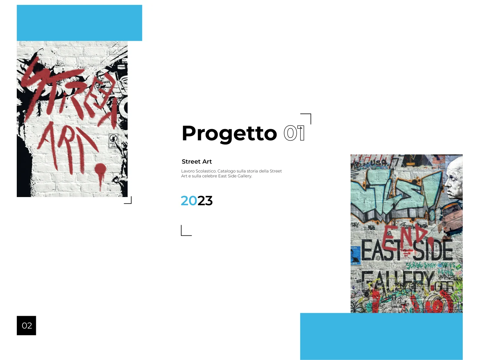
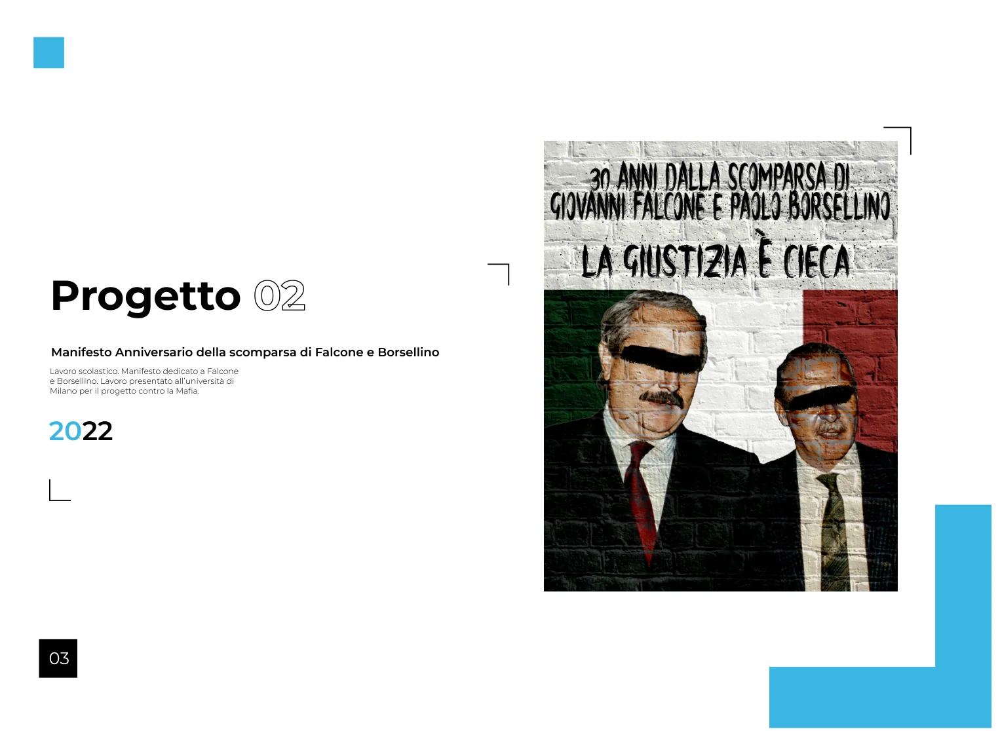
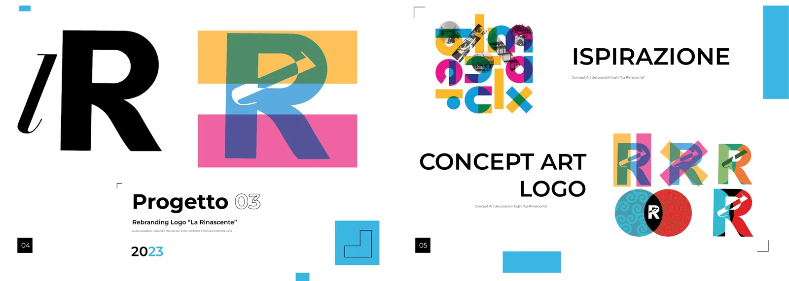
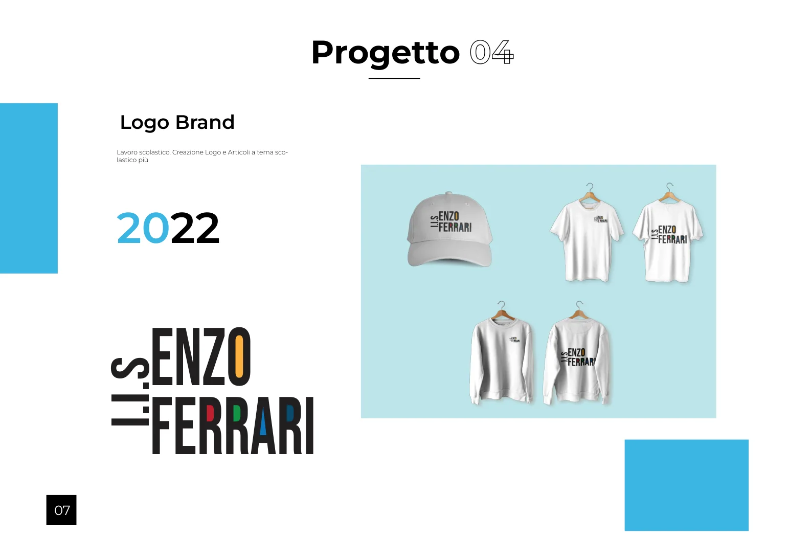
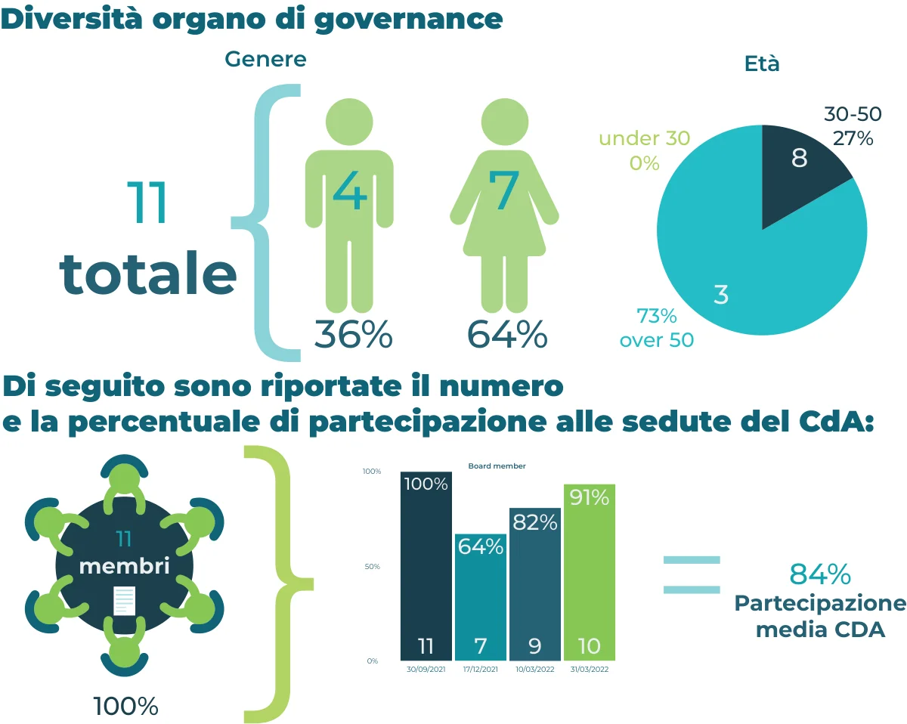

Street Art & East Side Gallery
Catalogo editoriale sulla storia della Street Art.
Ciao, sono Luca Eletto. Progetto identità, contenuti editoriali e comunicazione visiva, unendo ricerca, creatività e attenzione al dettaglio.
Esplora i miei lavoriUna selezione di lavori tra grafica editoriale, branding, manifesti e infografiche.

Catalogo editoriale sulla storia della Street Art.

Manifesto per un progetto contro la mafia.

Ricerca visiva, logo, identità e applicazioni del marchio.

Identità grafica e merchandising scolastico.

Infografiche e visualizzazione di dati per il bilancio sociale.
Dal concept al risultato: una panoramica dei materiali realizzati.
Catalogo sulla storia della Street Art e sulla celebre East Side Gallery. Il progetto esplora un linguaggio visivo urbano attraverso immagini, composizione e tipografia.
Manifesto dedicato all'anniversario della scomparsa di Giovanni Falcone e Paolo Borsellino, presentato all'Università di Milano nell'ambito di un progetto contro la mafia.
Studio di un'ipotesi di rebranding per La Rinascente: ricerca delle origini del marchio, sperimentazione di loghi, definizione di un'identità visiva e applicazioni su materiali di comunicazione e mockup. Progetto didattico non commissionato dal brand.
Progettazione di un logo per l'istituto scolastico e studio della sua applicazione a una linea di articoli e abbigliamento a tema.
Collaborazione alla realizzazione di contenuti visivi per il Bilancio Sociale 2021/2022 di JA Italia, con creazione di elementi vettoriali e infografiche tramite Adobe Illustrator e lavoro di impaginazione attraverso Adobe InDesign.
Sono Luca Eletto, diplomato in Grafica e Comunicazione. Mi interessano il branding, la progettazione editoriale, il design digitale e la capacità delle immagini di raccontare idee e informazioni.
Il mio percorso mi ha permesso di lavorare con strumenti di grafica vettoriale, impaginazione e comunicazione visiva, passando dalla fase di concept alla preparazione degli elaborati finali.
Sono disponibile a valutare collaborazioni e nuove opportunità nel mondo della grafica e della comunicazione.